Vertex Tools¶
This page covers many of the tools in the menu. These are tools that work primarily on vertex selections, however, some also work with edge or face selections.
Merging¶
Merging Vertices¶
参考
Alt-MThis tool allows you to merge all selected vertices to an unique one, deleting all others. You can choose the location of the surviving vertex in the menu this tool pops up before executing:
- At First
- Only available in Vertex select mode, it will place the remaining vertex at the location of the first one selected.
- At Last
- Only available in Vertex select mode, it will place the remaining vertex at the location of the last one selected (the active one).
- At Center
- Available in all select modes, it will place the remaining vertex at the center of the selection.
- At Cursor
- Available in all select modes, it will place the remaining vertex at the 3D游标.
- Collapse
- This is a special option, as it might let “live” more than one vertex. In fact, you will have as much remaining vertices as you had “islands” of selection (i.e. groups of linked selected vertices). The remaining vertices will be positioned at the center of their respective “islands”. It is also available via the menu option...
Merging vertices of course also deletes some edges and faces. But Blender will do everything it can to preserve edges and faces only partly involved in the reunion.
AutoMerge 编辑¶
参考
The Mesh menu as a related toggle option: AutoMerge 编辑. When enabled, as soon as a vertex moves closer to another one than the Limit setting (Mesh Tools panel, see below), they are automatically merged.
Remove Doubles¶
参考
W or Remove Doubles is a useful tool to simplify a mesh by merging vertices that are closer than a specified distance to each other. An alternate way to simplify a mesh is to use the Decimate modifier.
- Merge Distance
- Sets the distance threshold for merging vertices, in Blender units.
- Unselected
- Allows vertices in selection to be merged with unselected vertices. When disabled, selected vertices will only be merged with other selected ones.
Separating¶
Rip¶
参考
VRip creates a “hole” into a mesh by making a copy of selected vertices and edges, still linked to the neighbor non-selected vertices, so that the new edges are borders of the faces on one side, and the old ones, borders of the faces of the other side of the rip.
例子¶
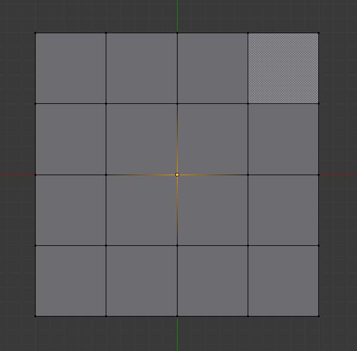
Selected vertex. |
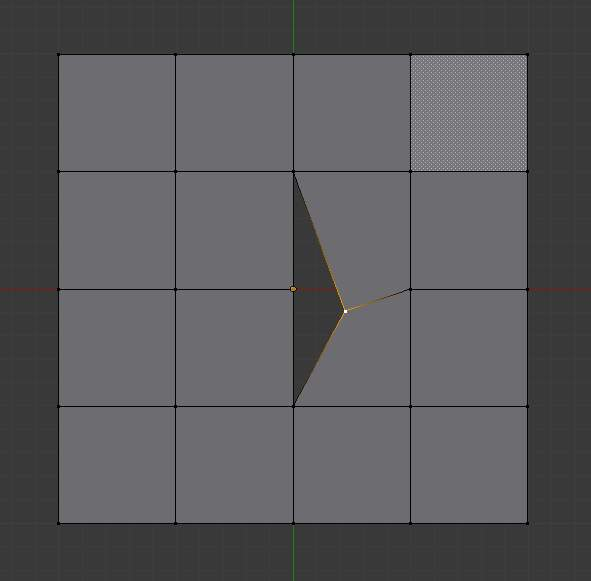
Hole created after using rip on vertex. |
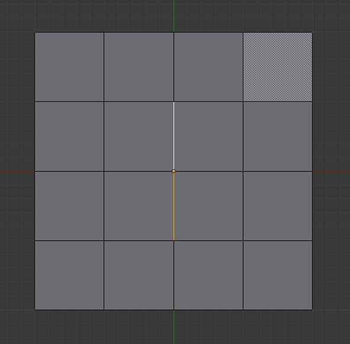
Edges selected. |
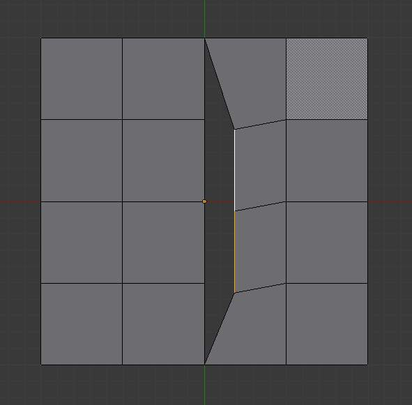
Result of rip with edge selection. |
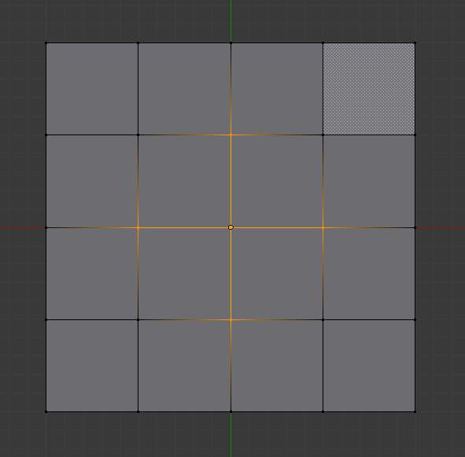
A complex selection of vertices. |
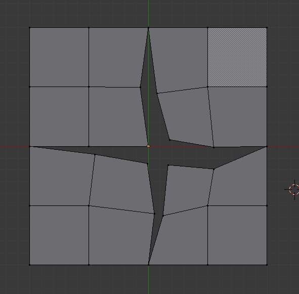
Result of rip operation. |
{kind=link}
{kind=link}
{kind=link}
{kind=link}
{kind=link}
{kind=link}
Limitations¶
Rip will only work when edges and/or vertices are selected. Using the tool when a face is selected (explicitly or implicitly), will return an error message “Cannot perform ripping with faces selected this way” If your selection includes some edges or vertices that are not “between” two faces manifold, it will also fail with message “No proper selection or faces include”.
Rip Fill¶
参考
Alt-VRip fill works the same as the Rip tool above, but instead of leaving a hole, it fills in the gap with geometry.
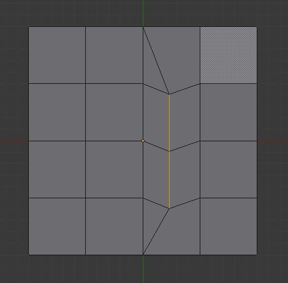
Result of rip fill. |
{kind=link}
Split¶
参考
YA quite specific tool, it makes a sort of copy of the selection, removing the original data if it is not used by any non-selected element. This means that if you split an edge from a mesh, the original edge will still remain unless it is not linked to anything else. If you split a face, the original face itself will be deleted, but its edges and vertices remain unchanged. And so on.
Note that the “copy” is left exactly at the same position as the original, so you must move it
G to see it clearly...
Connect Vertex Path¶
参考
JThis tool connects vertices in the order they’re selected, splitting the faces between them.
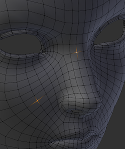
Two disconnected vertices. |
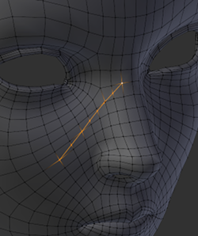
Result of connecting. |
Running a second time will connect the first/last endpoints.
Vertices not connected to any faces will create edges, so this can be used as a way to quickly connect isolated vertices too.
Connect Vertices¶
参考
This tool connects selected vertices by creating edges between them and splitting the face.
This tool can be used on many faces at once.
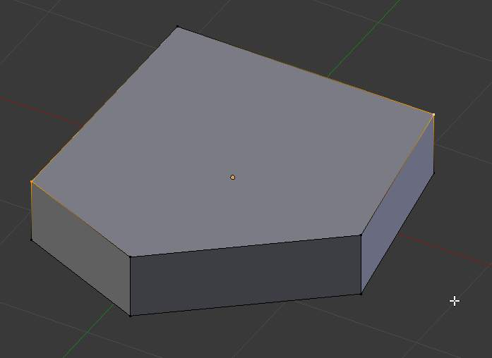
Vertices before connecting. |
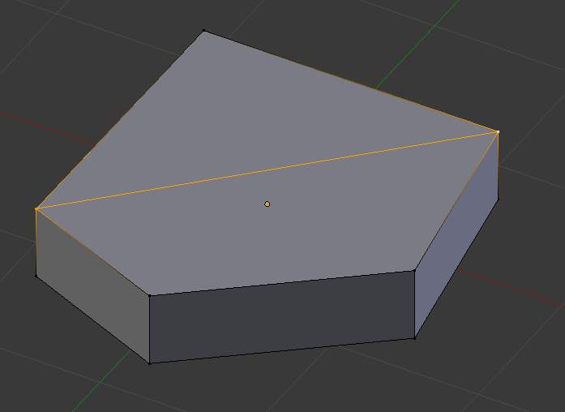
After connecting vertices. |
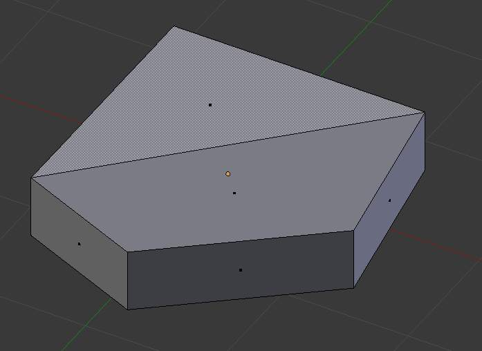
Resulting face pair. |
{kind=link}
{kind=link}
{kind=link}
The main difference between this tool and Connect Vertex Path, is this tool ignores selection order and connects all selected vertices that share a face.
Vertex Slide¶
参考
Shift-VVertex Slide will transform a vertex along one of its adjacent edges.
Use Shift-V to enter tool. Highlight the desired edge by moving the mouse,
then confirm with LMB.
Drag the cursor to specify the position along the line formed by the edge,
then LMB again to move the vertex.
Shift- Higher precision control.
Ctrl- Snap to value (useful to combine with auto merge)
LMB- confirms the tool
RMBorEsc- Cancels.
AltorC- Toggle clamping the slide within the edge extents.
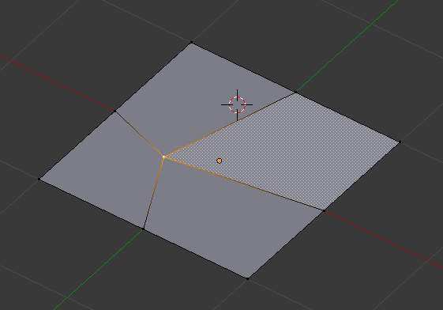
Selected vertex. |
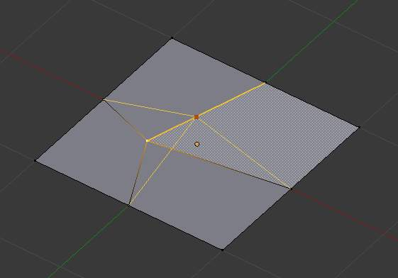
Positioning vertex interactively. |
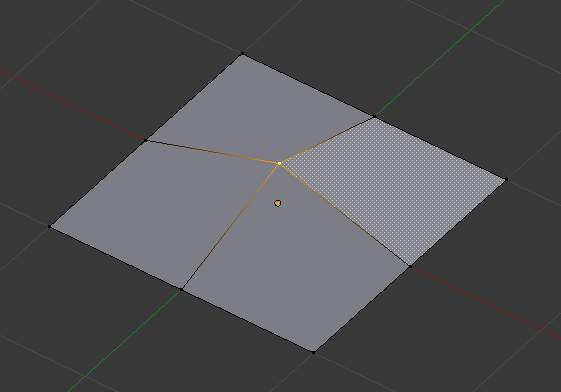
Repositioned vertex. |
{kind=link}
{kind=link}
{kind=link}
Make Vertex Parent¶
参考
Ctrl-PThis will parent the other selected object(s) to the vertices/edges/faces selected, as described here.
Add Hook¶
参考
Ctrl-HAdds a Hook Modifier (using either a new empty, or the current selected object) linked to the selection. Note that even if it appears in the history menu, this action cannot be undone in 编辑模式 - probably because it involves other objects...